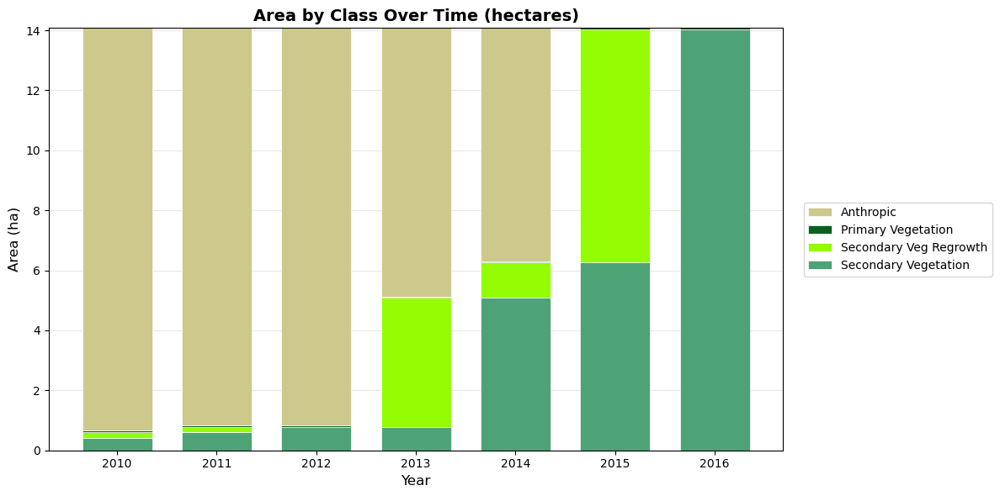
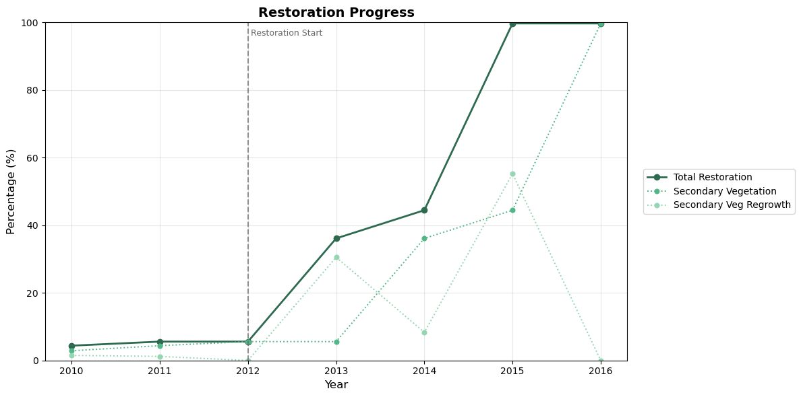

Args: df: DataFrame from extract_categorical with columns: site_id, year, class_value, count, area_ha, class_name value_col: Column to use for values (‘area_ha’ or ‘count’) as_percentage: If True, convert to percentages per year
Returns: Pivoted DataFrame with years as index, classes as columns
Get colors for each class, using layer palette, custom, or defaults.
Priority order: 1. custom_colors (if provided) 2. layer.palette (if layer provided and has palette) 3. DEFAULT_PALETTE cycle
Args: classes: List of class names custom_colors: Optional dict mapping class names to hex colors layer: Optional CategoricalLayer with palette attribute
def plot_class_distribution( df:DataFrame, title:str='Class Distribution Over Time (%)', colors:Optional=None, layer:Optional=None, figsize:tuple=(12, 6), marker:str='o', linewidth:float=2, markersize:float=6, grid:bool=True, legend_loc:str='center left', legend_bbox:tuple=(1.02, 0.5))->tuple:
Create a line chart showing class distribution percentages over time.
Args: df: DataFrame from extract_categorical title: Chart title colors: Optional dict mapping class names to hex colors layer: Optional CategoricalLayer to extract colors from palette figsize: Figure size (width, height) marker: Marker style for data points linewidth: Width of lines markersize: Size of markers grid: Whether to show grid legend_loc: Legend location legend_bbox: Legend bbox_to_anchor
def plot_class_area_stacked( df:DataFrame, title:str='Area by Class Over Time (hectares)', colors:Optional=None, layer:Optional=None, figsize:tuple=(12, 6), bar_width:float=0.7, grid:bool=True, legend_loc:str='center left', legend_bbox:tuple=(1.02, 0.5))->tuple:
Create a stacked bar chart showing area by class over time.
Args: df: DataFrame from extract_categorical title: Chart title colors: Optional dict mapping class names to hex colors layer: Optional CategoricalLayer to extract colors from palette figsize: Figure size (width, height) bar_width: Width of bars grid: Whether to show grid legend_loc: Legend location legend_bbox: Legend bbox_to_anchor
Returns: Tuple of (figure, axes)
Interactive Charts (Plotly)
Interactive visualizations with hover info, zoom, and pan.
def plot_class_distribution_interactive( df:DataFrame, title:str='Class Distribution Over Time (%)', colors:Optional=None, layer:Optional=None, height:int=500, width:Optional=None, line_width:float=2, marker_size:float=8)->go.Figure:
Create an interactive line chart showing class distribution percentages.
Args: df: DataFrame from extract_categorical title: Chart title colors: Optional dict mapping class names to hex colors layer: Optional CategoricalLayer to extract colors from palette height: Chart height in pixels width: Chart width in pixels (None for auto) line_width: Width of lines marker_size: Size of markers
def plot_class_area_stacked_interactive( df:DataFrame, title:str='Area by Class Over Time (hectares)', colors:Optional=None, layer:Optional=None, height:int=500, width:Optional=None)->go.Figure:
Create an interactive stacked bar chart showing area by class.
Args: df: DataFrame from extract_categorical title: Chart title colors: Optional dict mapping class names to hex colors layer: Optional CategoricalLayer to extract colors from palette height: Chart height in pixels width: Chart width in pixels (None for auto)
Universal plotting function for extraction results.
Args: df: DataFrame from extract_categorical chart_type: ‘distribution’ (line %) or ‘area’ (stacked bar) interactive: If True, use plotly; if False, use matplotlib layer: Optional CategoricalLayer to extract colors from palette **kwargs: Additional arguments passed to the underlying plot function
Returns: Figure object (matplotlib or plotly)
Aggregated Class Charts
Sometimes multiple classes represent components of the same concept. For example, “Secondary Vegetation” + “Secondary Veg Regrowth” together represent total restoration progress.
The plot_aggregated function lets you define aggregates and visualize both components (dashed) and totals (solid).
Plot aggregated classes with components shown as dashed lines.
Args: df: DataFrame from extract_categorical aggregates: Dict mapping aggregate name to list of component class names. Example: {‘total_restoration’: [‘Secondary Vegetation’, ‘Secondary Veg Regrowth’]} title: Chart title colors: Optional dict mapping class/aggregate names to hex colors layer: Optional CategoricalLayer to extract colors from palette show_components: If True, show component classes as dashed lines vlines: Optional dict mapping years to labels for vertical reference lines. Example: {2012: ‘Restoration Start’} vline_color: Color for vertical lines (default gray) figsize: Figure size (width, height) linewidth: Width of lines marker: Marker style markersize: Size of markers grid: Whether to show grid legend_loc: Legend location legend_bbox: Legend bbox_to_anchor
Create an interactive aggregated class chart with plotly.
Args: df: DataFrame from extract_categorical aggregates: Dict mapping aggregate name to list of component class names. title: Chart title colors: Optional dict mapping class/aggregate names to hex colors layer: Optional CategoricalLayer to extract colors from palette show_components: If True, show component classes as dashed lines vlines: Optional dict mapping years to labels for vertical reference lines. Example: {2012: ‘Restoration Start’} vline_color: Color for vertical lines (default gray) height: Chart height in pixels width: Chart width in pixels (None for auto) line_width: Width of lines marker_size: Size of markers
Returns: Plotly Figure object
Example Usage
Let’s demonstrate the charts with real data from the DEFREG dataset.
/Users/alice/.local/share/mamba/envs/gee-polygons/lib/python3.10/site-packages/google/api_core/_python_version_support.py:275: FutureWarning: You are using a Python version (3.10.19) which Google will stop supporting in new releases of google.api_core once it reaches its end of life (2026-10-04). Please upgrade to the latest Python version, or at least Python 3.11, to continue receiving updates for google.api_core past that date.
warnings.warn(message, FutureWarning)
# Load a site and extract datafrom gee_polygons.site import load_sitesfrom gee_polygons.datasets.mapbiomas import MAPBIOMAS_DEFREGsites = load_sites('../data/restoration_sites_subset.geojson')site = sites[8]print(site)# Extract DEFREG data for multiple yearsdf = site.extract_categorical(MAPBIOMAS_DEFREG, years=range(2010, 2017))df.head(10)
Site(id=9368, start_year=2012)
site_id
year
class_value
count
area_ha
class_name
0
9368
2010
1
149.090196
13.418118
Anthropic
1
9368
2010
2
0.462745
0.041647
Primary Vegetation
2
9368
2010
3
4.501961
0.405176
Secondary Vegetation
3
9368
2010
5
2.352941
0.211765
Secondary Veg Regrowth
4
9368
2011
1
147.211765
13.249059
Anthropic
5
9368
2011
2
0.462745
0.041647
Primary Vegetation
6
9368
2011
3
6.854902
0.616941
Secondary Vegetation
7
9368
2011
5
1.878431
0.169059
Secondary Veg Regrowth
8
9368
2012
1
147.211765
13.249059
Anthropic
9
9368
2012
2
0.462745
0.041647
Primary Vegetation
Static Charts (Matplotlib)
# Line chart: Class distribution over time (%)# Pass the layer to automatically use MapBiomas DEFREG colorsfig, ax = plot_class_distribution(df, layer=MAPBIOMAS_DEFREG)plt.show()
# Stacked bar chart: Area by class over timefig, ax = plot_class_area_stacked(df, layer=MAPBIOMAS_DEFREG)plt.show()

Interactive Charts (Plotly)
# Interactive line chartfig = plot_class_distribution_interactive(df, layer=MAPBIOMAS_DEFREG)fig.show()
Unable to display output for mime type(s): application/vnd.plotly.v1+json
# Interactive stacked bar chartfig = plot_class_area_stacked_interactive(df, layer=MAPBIOMAS_DEFREG)fig.show()
Unable to display output for mime type(s): application/vnd.plotly.v1+json
Using the Convenience Function
# Quick way to generate any chart type# The layer parameter provides automatic coloringplot_extraction(df, chart_type='distribution', interactive=True, layer=MAPBIOMAS_DEFREG)
Unable to display output for mime type(s): application/vnd.plotly.v1+json
Aggregated Charts
Combine multiple classes into a single metric while showing components:
# Define aggregates: which classes combine into which totalsaggregates = {'Total Restoration': ['Secondary Vegetation', 'Secondary Veg Regrowth']}# Custom colors: green shades for the restoration themerestoration_colors = {'Total Restoration': '#2d6a4f', # dark green for total'Secondary Vegetation': '#52b788', # medium green'Secondary Veg Regrowth': '#95d5b2', # light green}# Mark important events with vertical lines# (site.start_year is 2012 for this site)events = {2012: 'Restoration Start'}fig, ax = plot_aggregated( df, aggregates=aggregates, colors=restoration_colors, vlines=events, title='Restoration Progress')plt.show()

# Interactive version with vertical linefig = plot_aggregated_interactive( df, aggregates=aggregates, colors=restoration_colors, vlines=events, title='Restoration Progress')fig.show()
Unable to display output for mime type(s): application/vnd.plotly.v1+json